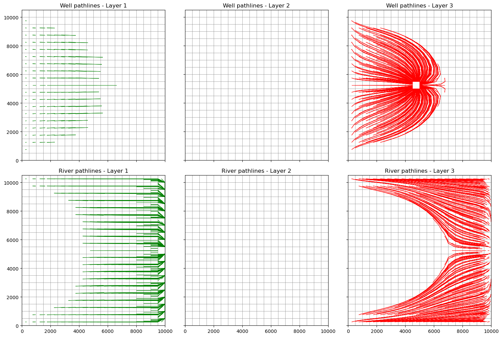
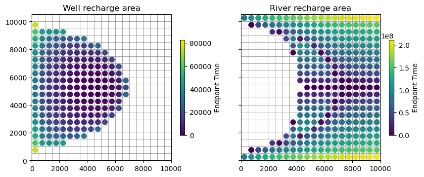

Note
This page was generated from Notebooks/flopy3_modpath7_create_simulation.ipynb.
Interactive online version: 
Creating a MODPATH 7 simulation
This notebook demonstrates how to create a simple forward and backward MODPATH 7 simulation using the .create_mp7() method. The notebooks also shows how to create subsets of endpoint output and plot MODPATH results on ModelMap objects.
[1]:
import sys
import os
from tempfile import TemporaryDirectory
import numpy as np
import matplotlib as mpl
import matplotlib.pyplot as plt
# run installed version of flopy or add local path
try:
import flopy
except:
fpth = os.path.abspath(os.path.join("..", ".."))
sys.path.append(fpth)
import flopy
print(sys.version)
print("numpy version: {}".format(np.__version__))
print("matplotlib version: {}".format(mpl.__version__))
print("flopy version: {}".format(flopy.__version__))
# temporary directory
temp_dir = TemporaryDirectory()
model_ws = temp_dir.name
3.10.10 | packaged by conda-forge | (main, Mar 24 2023, 20:08:06) [GCC 11.3.0]
numpy version: 1.24.3
matplotlib version: 3.7.1
flopy version: 3.3.7
[2]:
# define executable names
mpexe = "mp7"
mfexe = "mf6"
Flow model data
[3]:
nper, nstp, perlen, tsmult = 1, 1, 1.0, 1.0
nlay, nrow, ncol = 3, 21, 20
delr = delc = 500.0
top = 400.0
botm = [220.0, 200.0, 0.0]
laytyp = [1, 0, 0]
kh = [50.0, 0.01, 200.0]
kv = [10.0, 0.01, 20.0]
wel_loc = (2, 10, 9)
wel_q = -150000.0
rch = 0.005
riv_h = 320.0
riv_z = 317.0
riv_c = 1.0e5
[4]:
def get_nodes(locs):
nodes = []
for k, i, j in locs:
nodes.append(k * nrow * ncol + i * ncol + j)
return nodes
MODPATH 7 using MODFLOW 6
Create and run MODFLOW 6
[5]:
ws = os.path.join(model_ws, "mp7_ex1_cs")
nm = "ex01_mf6"
# Create the Flopy simulation object
sim = flopy.mf6.MFSimulation(
sim_name=nm, exe_name=mfexe, version="mf6", sim_ws=ws
)
# Create the Flopy temporal discretization object
pd = (perlen, nstp, tsmult)
tdis = flopy.mf6.modflow.mftdis.ModflowTdis(
sim, pname="tdis", time_units="DAYS", nper=nper, perioddata=[pd]
)
# Create the Flopy groundwater flow (gwf) model object
model_nam_file = "{}.nam".format(nm)
gwf = flopy.mf6.ModflowGwf(
sim, modelname=nm, model_nam_file=model_nam_file, save_flows=True
)
# Create the Flopy iterative model solver (ims) Package object
ims = flopy.mf6.modflow.mfims.ModflowIms(
sim,
pname="ims",
complexity="SIMPLE",
outer_hclose=1e-6,
inner_hclose=1e-6,
rcloserecord=1e-6,
)
# create gwf file
dis = flopy.mf6.modflow.mfgwfdis.ModflowGwfdis(
gwf,
pname="dis",
nlay=nlay,
nrow=nrow,
ncol=ncol,
length_units="FEET",
delr=delr,
delc=delc,
top=top,
botm=botm,
)
# Create the initial conditions package
ic = flopy.mf6.modflow.mfgwfic.ModflowGwfic(gwf, pname="ic", strt=top)
# Create the node property flow package
npf = flopy.mf6.modflow.mfgwfnpf.ModflowGwfnpf(
gwf, pname="npf", icelltype=laytyp, k=kh, k33=kv
)
# recharge
flopy.mf6.modflow.mfgwfrcha.ModflowGwfrcha(gwf, recharge=rch)
# wel
wd = [(wel_loc, wel_q)]
flopy.mf6.modflow.mfgwfwel.ModflowGwfwel(
gwf, maxbound=1, stress_period_data={0: wd}
)
# river
rd = []
for i in range(nrow):
rd.append([(0, i, ncol - 1), riv_h, riv_c, riv_z])
flopy.mf6.modflow.mfgwfriv.ModflowGwfriv(gwf, stress_period_data={0: rd})
# Create the output control package
headfile = "{}.hds".format(nm)
head_record = [headfile]
budgetfile = "{}.cbb".format(nm)
budget_record = [budgetfile]
saverecord = [("HEAD", "ALL"), ("BUDGET", "ALL")]
oc = flopy.mf6.modflow.mfgwfoc.ModflowGwfoc(
gwf,
pname="oc",
saverecord=saverecord,
head_filerecord=head_record,
budget_filerecord=budget_record,
)
# Write the datasets
sim.write_simulation()
# Run the simulation
success, buff = sim.run_simulation(silent=True, report=True)
assert success, "mf6 model did not run"
for line in buff:
print(line)
writing simulation...
writing simulation name file...
writing simulation tdis package...
writing solution package ims...
writing model ex01_mf6...
writing model name file...
writing package dis...
writing package ic...
writing package npf...
writing package rcha_0...
writing package wel_0...
writing package riv_0...
INFORMATION: maxbound in ('gwf6', 'riv', 'dimensions') changed to 21 based on size of stress_period_data
writing package oc...
MODFLOW 6
U.S. GEOLOGICAL SURVEY MODULAR HYDROLOGIC MODEL
VERSION 6.4.1 Release 12/09/2022
MODFLOW 6 compiled Apr 12 2023 19:02:29 with Intel(R) Fortran Intel(R) 64
Compiler Classic for applications running on Intel(R) 64, Version 2021.7.0
Build 20220726_000000
This software has been approved for release by the U.S. Geological
Survey (USGS). Although the software has been subjected to rigorous
review, the USGS reserves the right to update the software as needed
pursuant to further analysis and review. No warranty, expressed or
implied, is made by the USGS or the U.S. Government as to the
functionality of the software and related material nor shall the
fact of release constitute any such warranty. Furthermore, the
software is released on condition that neither the USGS nor the U.S.
Government shall be held liable for any damages resulting from its
authorized or unauthorized use. Also refer to the USGS Water
Resources Software User Rights Notice for complete use, copyright,
and distribution information.
Run start date and time (yyyy/mm/dd hh:mm:ss): 2023/05/04 16:05:36
Writing simulation list file: mfsim.lst
Using Simulation name file: mfsim.nam
Solving: Stress period: 1 Time step: 1
Run end date and time (yyyy/mm/dd hh:mm:ss): 2023/05/04 16:05:36
Elapsed run time: 0.039 Seconds
WARNING REPORT:
1. NONLINEAR BLOCK VARIABLE 'OUTER_HCLOSE' IN FILE 'ex01_mf6.ims' WAS
DEPRECATED IN VERSION 6.1.1. SETTING OUTER_DVCLOSE TO OUTER_HCLOSE VALUE.
2. LINEAR BLOCK VARIABLE 'INNER_HCLOSE' IN FILE 'ex01_mf6.ims' WAS
DEPRECATED IN VERSION 6.1.1. SETTING INNER_DVCLOSE TO INNER_HCLOSE VALUE.
Normal termination of simulation.
Get locations to extract data
[6]:
nodew = get_nodes([wel_loc])
cellids = gwf.riv.stress_period_data.get_data()[0]["cellid"]
nodesr = get_nodes(cellids)
Create and run MODPATH 7
Forward tracking
[7]:
# create modpath files
mpnamf = nm + "_mp_forward"
# create basic forward tracking modpath simulation
mp = flopy.modpath.Modpath7.create_mp7(
modelname=mpnamf,
trackdir="forward",
flowmodel=gwf,
model_ws=ws,
rowcelldivisions=1,
columncelldivisions=1,
layercelldivisions=1,
exe_name=mpexe,
)
# write modpath datasets
mp.write_input()
# run modpath
succes, buff = mp.run_model(silent=True, report=True)
assert success, "mp7 forward tracking failed to run"
for line in buff:
print(line)
MODPATH Version 7.2.001
Program compiled Apr 12 2023 19:05:18 with IFORT compiler (ver. 20.21.7)
Run particle tracking simulation ...
Processing Time Step 1 Period 1. Time = 1.00000E+00 Steady-state flow
Particle Summary:
0 particles are pending release.
0 particles remain active.
0 particles terminated at boundary faces.
0 particles terminated at weak sink cells.
0 particles terminated at weak source cells.
1260 particles terminated at strong source/sink cells.
0 particles terminated in cells with a specified zone number.
0 particles were stranded in inactive or dry cells.
0 particles were unreleased.
0 particles have an unknown status.
Normal termination.
Backward tracking from well and river locations
[8]:
# create modpath files
mpnamb = nm + "_mp_backward"
# create basic forward tracking modpath simulation
mp = flopy.modpath.Modpath7.create_mp7(
modelname=mpnamb,
trackdir="backward",
flowmodel=gwf,
model_ws=ws,
rowcelldivisions=5,
columncelldivisions=5,
layercelldivisions=5,
nodes=nodew + nodesr,
exe_name=mpexe,
)
# write modpath datasets
mp.write_input()
# run modpath
success, buff = mp.run_model(silent=True, report=True)
assert success, "mp7 backward tracking failed to run"
for line in buff:
print(line)
MODPATH Version 7.2.001
Program compiled Apr 12 2023 19:05:18 with IFORT compiler (ver. 20.21.7)
Run particle tracking simulation ...
Processing Time Step 1 Period 1. Time = 1.00000E+00 Steady-state flow
Particle Summary:
0 particles are pending release.
0 particles remain active.
0 particles terminated at boundary faces.
0 particles terminated at weak sink cells.
0 particles terminated at weak source cells.
2750 particles terminated at strong source/sink cells.
0 particles terminated in cells with a specified zone number.
0 particles were stranded in inactive or dry cells.
0 particles were unreleased.
0 particles have an unknown status.
Normal termination.
Load and Plot MODPATH 7 output
Forward Tracking
Load forward tracking pathline data
[9]:
fpth = os.path.join(ws, mpnamf + ".mppth")
p = flopy.utils.PathlineFile(fpth)
pw = p.get_destination_pathline_data(dest_cells=nodew)
pr = p.get_destination_pathline_data(dest_cells=nodesr)
Load forward tracking endpoint data
[10]:
fpth = os.path.join(ws, mpnamf + ".mpend")
e = flopy.utils.EndpointFile(fpth)
Get forward particles that terminate in the well
[11]:
well_epd = e.get_destination_endpoint_data(dest_cells=nodew)
Get particles that terminate in the river boundaries
[12]:
riv_epd = e.get_destination_endpoint_data(dest_cells=nodesr)
Well and river forward tracking pathlines
[13]:
colors = ["green", "orange", "red"]
[14]:
f, axes = plt.subplots(
ncols=3, nrows=2, sharey=True, sharex=True, figsize=(15, 10)
)
axes = axes.flatten()
idax = 0
for k in range(nlay):
ax = axes[idax]
ax.set_aspect("equal")
ax.set_title("Well pathlines - Layer {}".format(k + 1))
mm = flopy.plot.PlotMapView(model=gwf, ax=ax)
mm.plot_grid(lw=0.5)
mm.plot_pathline(pw, layer=k, colors=colors[k], lw=0.75)
idax += 1
for k in range(nlay):
ax = axes[idax]
ax.set_aspect("equal")
ax.set_title("River pathlines - Layer {}".format(k + 1))
mm = flopy.plot.PlotMapView(model=gwf, ax=ax)
mm.plot_grid(lw=0.5)
mm.plot_pathline(pr, layer=k, colors=colors[k], lw=0.75)
idax += 1
plt.tight_layout();

Forward tracking endpoints captured by the well and river
[15]:
f, axes = plt.subplots(ncols=2, nrows=1, sharey=True, figsize=(10, 5))
axes = axes.flatten()
ax = axes[0]
ax.set_aspect("equal")
ax.set_title("Well recharge area")
mm = flopy.plot.PlotMapView(model=gwf, ax=ax)
mm.plot_grid(lw=0.5)
mm.plot_endpoint(well_epd, direction="starting", colorbar=True, shrink=0.5)
ax = axes[1]
ax.set_aspect("equal")
ax.set_title("River recharge area")
mm = flopy.plot.PlotMapView(model=gwf, ax=ax)
mm.plot_grid(lw=0.5)
mm.plot_endpoint(riv_epd, direction="starting", colorbar=True, shrink=0.5);

Backward tracking
Load backward tracking pathlines
[16]:
fpth = os.path.join(ws, mpnamb + ".mppth")
p = flopy.utils.PathlineFile(fpth)
pwb = p.get_destination_pathline_data(dest_cells=nodew)
prb = p.get_destination_pathline_data(dest_cells=nodesr)
Load backward tracking endpoints
[17]:
fpth = os.path.join(ws, mpnamb + ".mpend")
e = flopy.utils.EndpointFile(fpth)
ewb = e.get_destination_endpoint_data(dest_cells=nodew, source=True)
erb = e.get_destination_endpoint_data(dest_cells=nodesr, source=True)
Well backward tracking pathlines
[18]:
f, axes = plt.subplots(ncols=2, nrows=1, figsize=(10, 5))
ax = axes[0]
ax.set_aspect("equal")
ax.set_title("Well recharge area")
mm = flopy.plot.PlotMapView(model=gwf, ax=ax)
mm.plot_grid(lw=0.5)
mm.plot_pathline(
pwb,
layer="all",
colors="blue",
lw=0.5,
linestyle=":",
label="captured by wells",
)
mm.plot_endpoint(ewb, direction="ending") # , colorbar=True, shrink=0.5);
ax = axes[1]
ax.set_aspect("equal")
ax.set_title("River recharge area")
mm = flopy.plot.PlotMapView(model=gwf, ax=ax)
mm.plot_grid(lw=0.5)
mm.plot_pathline(
prb,
layer="all",
colors="green",
lw=0.5,
linestyle=":",
label="captured by rivers",
)
plt.tight_layout();